Верховная жрица
Таро уайта:
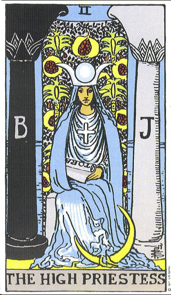
марсельское таро:
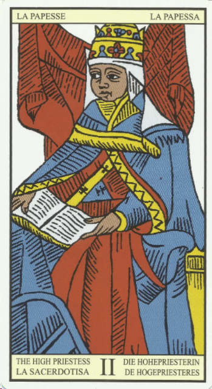
таро тотта:
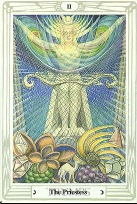
мифологическое таро:
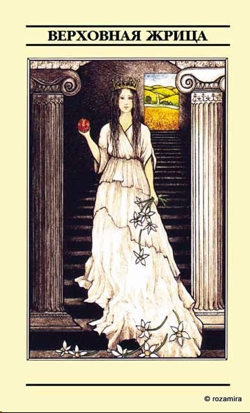
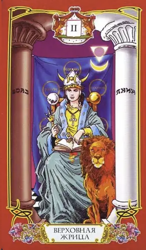
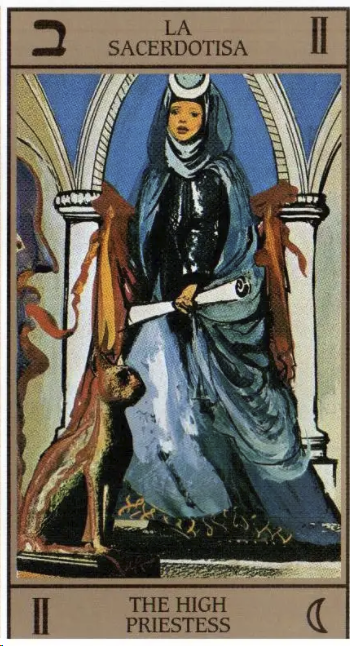
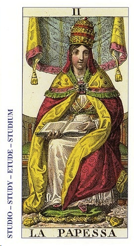
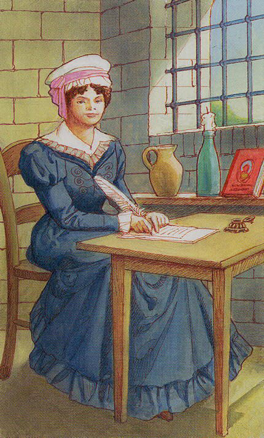
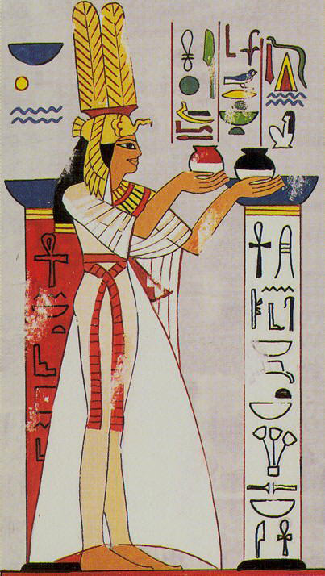
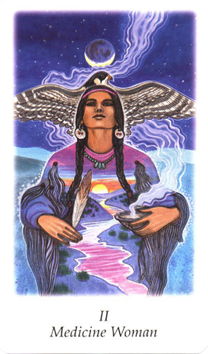
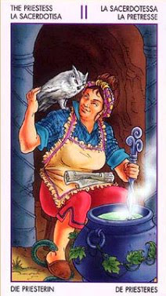
цвет:
голубой (воздушность), белый (чистота, невинность). контраст белый-черный (ночь-день, зло-добро, мертвый-живой и др. полярности)
фигура:
круг - символ женственности, полноты - полная луна
символ:
месяц либо полная луна
буква:
о (только шепотом говорить)
ощущения -
ощущение тайны, чего-то влекущего, женственности, мягкости и поддатливости. Пиглашение в путь, в неизведанное, карта приглашает перейти (сходить) в другой мир, там где можно получить тайные знания.
зрелость, духовность, мудрость, окультные знания, интуиция
запах:
едва уловимый запах лотоса
звук:
китайские колокольчики, которые развиваются на ветру, и их едва слышно.
вкус:
зеленый чай с жасмином
астрология:
Луна в водном тригоне. Влияние Нептуна (как тайны). Это карта для моей Луны в рыбах в 12 доме
мифология: тут вспомнился миф о Гекате
Ключевые слова:
приоткрыть завесу тайны. Видеть суть не смотря на то, что пока ничего не видно.
(не знаю как обозвать - магические ритуалы): два зеркала друг против друга со свечами. виден коридор - проход в другой мир
особенности. способности: ясновидение
окружение: кувшин с водой